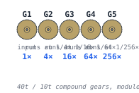

§ Reduction-gear card
pycon2026
A 256:1 reduction-gear chain, in a card, deconstructed by Python.
I'm going to PyCon US 2026 in Long Beach this May. I'm bringing a stack of 3D-printed business cards with a 256:1 compound gear chain inside, to start conversations on the floor about 3D-printable hardware, open-source licensing for physical designs, and the Python tooling around a public Onshape document. This page is what's on the back of those cards — what the thing is, how it works, and the open-source pieces it's built from.

uv run stepforge explode


How it works
Five gears in a chain. Four meshes. 4 : 1 reduction at every mesh. 44 = 256 : 1 overall. Spin the input gear with your thumb; the output gear moves a quarter-degree.

Six short Python-generated explainers tell the rest of the story. Each one is a deterministic Python program that produces its own page — change a number in src/explainers/card.py and the math, diagrams, and tables update on the next CI run. Start with The card in 3D.
- The card in 3D — canonical STEP source and the
stepforgepipeline. - Gear ratios — compound 4:1 multiplication with a thumb-travel intuition: ~20.3 m of finger motion per output rotation.
- Decoding the gears from STEP — slice the committed STL, FFT the radial profile, recover tooth count and module from geometry alone.
- Stacking — why a 3-level cycle of hub heights keeps the card thin without the discs colliding.
- Terminology — pinion, module, pitch circle, addendum. The 90 seconds of vocabulary the other pages assume.
- Printing considerations — orientation, chamfers, why each post is its own part.
The Python tools
Onshape as the parametric design surface. Python as the deconstruction layer. GitHub Actions as the build server.
stepforge is a small Click CLI on top of build123d (OpenCascade) and cascadio. Five subcommands, each a one-line responsibility:
stepforge inspect- Print AP242 schema, units, product structure, and tessellation stats.
stepforge build- Convert STEP to STL or GLB (format inferred from
--outextension). The GLB path usescascadioand preserves Onshape's per-part colors. stepforge render- Render STEP to PNG by tessellating, then reusing the OpenSCAD pipeline (iso / top / edge / front / right camera presets).
stepforge explode- Decompose a STEP assembly into per-part PNG / GLB plus exploded views — an animated GIF, an exploded GLB, and a TOML manifest.
stepforge assemble- Compose multiple STEP parts into a single STEP via a TOML manifest.
Every file under docs/assets/card/ is regenerated by the
Build Card workflow
on any push that touches the STEP or the stepforge source, then auto-committed back. Push a new Onshape export and the hero animation regenerates within a minute.
Try it yourself
$ git clone https://github.com/jmcpheron/pycon2026
$ cd pycon2026
$ uv sync --extra step
$ uv run stepforge inspect jmcpheron-card.step
$ uv run stepforge explode --in jmcpheron-card.step --out /tmp/card/
# → /tmp/card/{exploded.gif, jmcpheron-card.glb, parts/*.{stl,glb,png}, manifest.toml}
The step extra is opt-in — the OpenCascade wheel is ~180 MB. Requirements: Python 3.11+, OpenSCAD on your $PATH, uv. Or just open the Onshape document and spin it in your browser — no install required.
Why I'm bringing this to PyCon
The card is a conversation device, not a product. I made it so I'd have something concrete to talk about with people at the conference.
If you got here from a Hacker News post — hi. Find me on the floor at PyCon, or open an issue in the repo. Here's the laundry list I'm hoping to talk about:
- Open-source licensing for physical 3D files. I picked CC BY-SA 4.0 for the geometry and MIT for the code (see the notice). Was that the right call? Copyright on mechanical designs is fuzzy; CERN OHL exists; CC's applicability to STEP/STL is debated. Would love to hear from people who've thought harder about this.
- Sharing STEP files through open source. Who owns the canonical export when the source is a hosted Onshape doc? What does long-term custodianship look like for a file format that's already shifted through AP203 → AP214 → AP242?
- 3D design in general. What tools, what workflows, what makes the experience suck for someone walking in cold from a software background?
- Python tools for exploring STEP programmatically.
build123dfor new construction,cascadiofor colored GLB export, FFT-decoding tooth counts from an STL slice — the "geometry doesn't carry its own design intent" problem. - Onshape → other platforms. Is there a viable OSS / on-prem path for hobbyists? FreeCAD, Solvespace, build123d-as-source. What does "exportable design intent" mean when the source tool is the cloud?
- Gear ratios as a teaching tool. The math is fun and the thumb-travel intuition — ~20 metres of finger motion per output rotation — is the kind of fact that makes someone curious about the rest.
- Print-in-place mechanisms. Geometry tricks for things that survive a bed-slinger. Clearance budgets, sacrificial layers, the dance between bridging and overhangs.
- Defensive disclosure vs. license clauses for patent-troll protection. Public Onshape + dated commits is probably doing most of the work; share-alike does the rest. Or does it?
Built on the shoulders of
This card is glued together from a stack of OSS. In rough order of how much I'd miss them:
build123d |
Apache 2.0 | Geometry kernel on top of OpenCascade. Every stepforge subcommand sits on this. |
cascadio |
MIT | STEP → colored GLB in one call. Preserves the per-part colors Onshape assigns; everything else I tried lost them. |
trimesh |
MIT | STL slicing, FFT-decode of tooth counts, mesh roundtrips, the bounding-box math behind every render. |
OpenSCAD |
GPL-2.0 | Headless rendering of per-part PNGs and exploded-view frames. Called via subprocess; no library linking, so the GPL stays out of the Python. |
Pillow |
HPND | GIF assembly for the exploded animation. |
Click |
BSD-3 | CLI plumbing for both stepforge and explainers. |
drawsvg |
MIT | SVG diagrams in the explainer pages — the gear chain you saw up in §01. |
uv |
Apache/MIT | Packaging, lockfile, the whole reproducible-environment story. Replaced about three of my old wrappers. |
| Onshape | proprietary · free public docs | The parametric design surface. Free public documents made this whole sharing model possible on a hobbyist budget. |
| Fraunces | OFL 1.1 | The serif you're reading. Variable-axis everything; the headline weight here is custom-tuned per heading. |
Canonical dep list: pyproject.toml. Geometry license: LICENSE-3D-FILES (CC BY-SA 4.0). Code license: LICENSE (MIT).